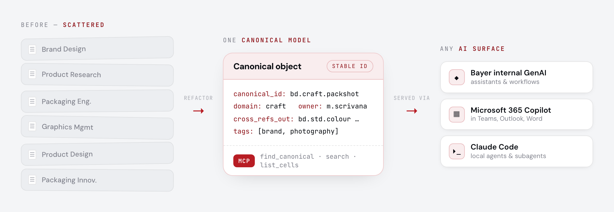
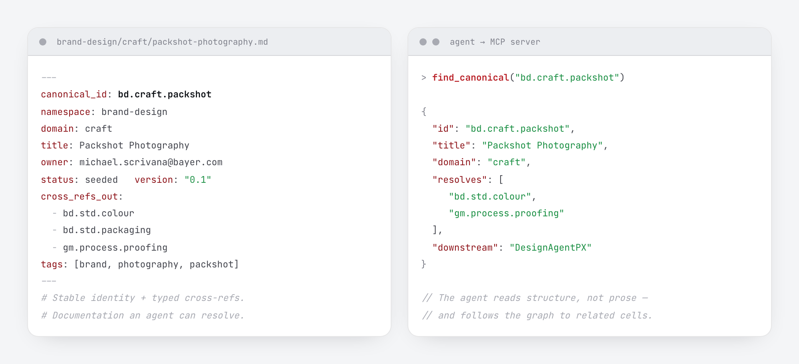
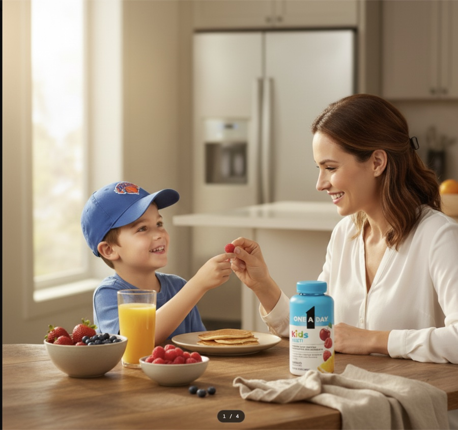
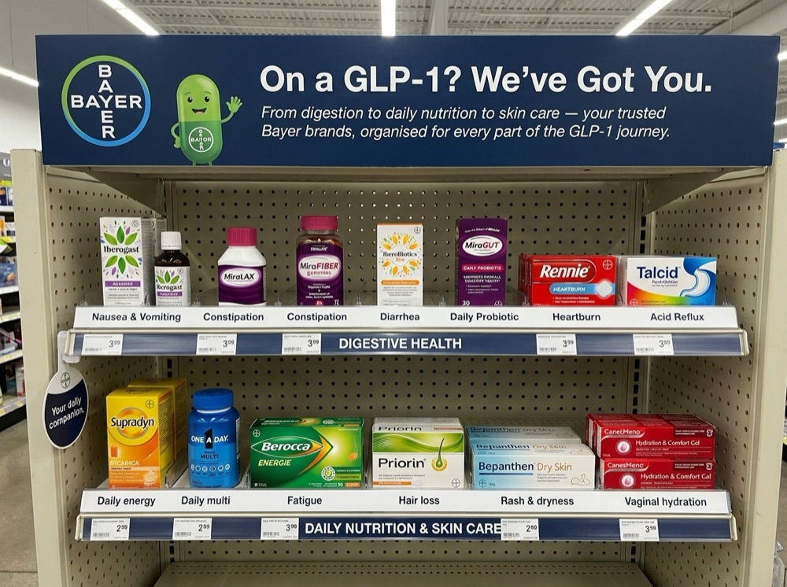
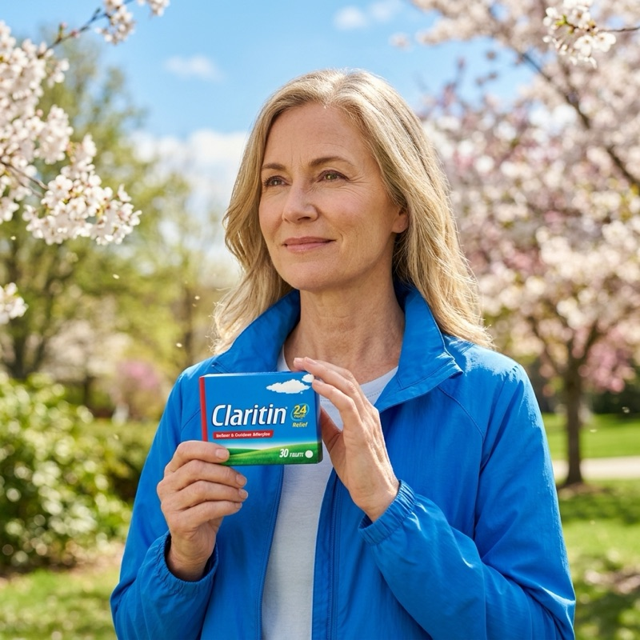
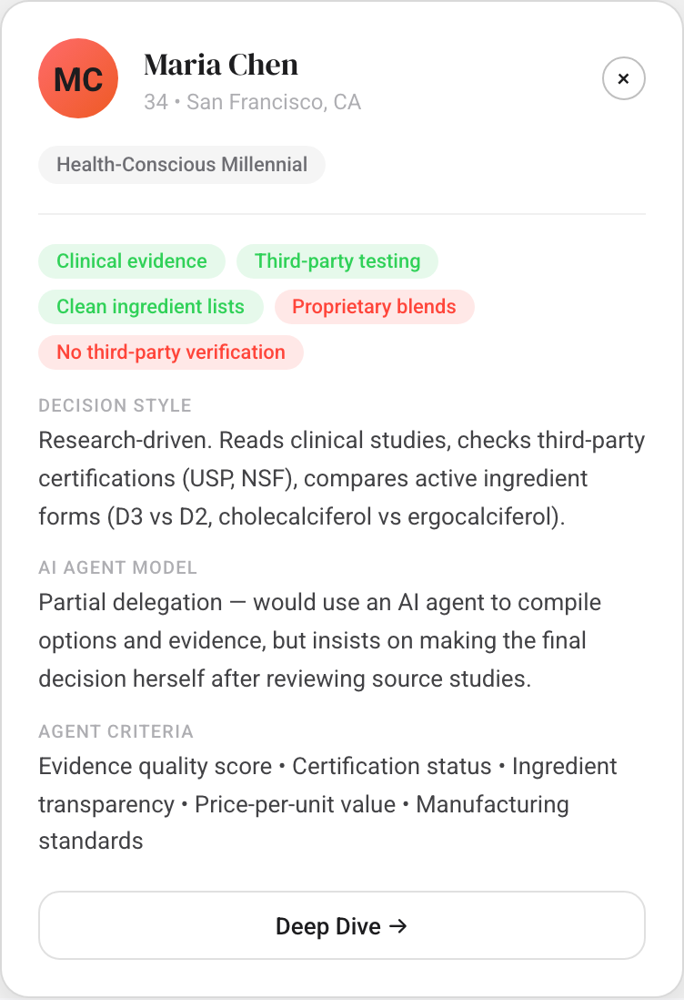
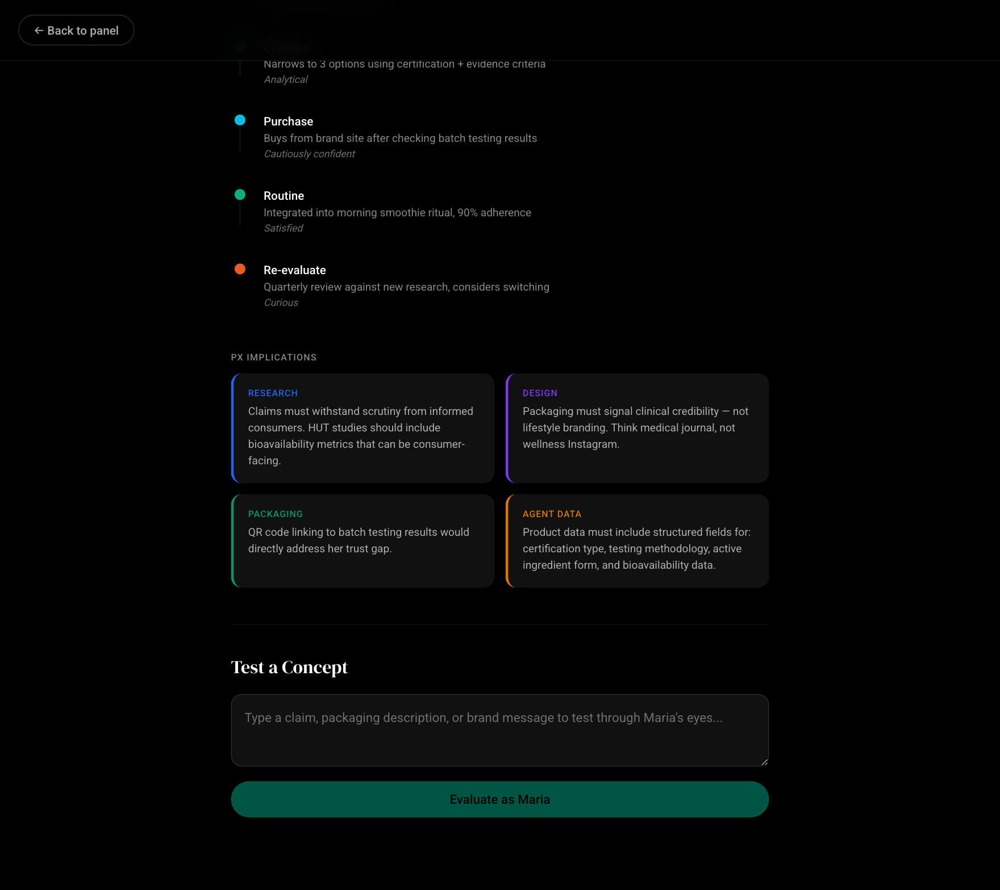

Make the dense thing feel simple — even when the logic underneath isn't.
Four things I designed and shipped — a machine-readable knowledge layer, the design-system layer two organizations build on, a node-based pipeline that hides hard compliance rules behind one simple action, and a persona studio that turns research into structured data. The systems beneath the screen, not just the screen.
Michael Scrivana — Product Designer & Creative Technologist, AI Transformation Lead at Bayer Consumer Health. michaelscrivana.com
I design for the seam where dense systems meet a simple screen — and I build the structured data underneath so it stays simple as it scales.
01
Machine-Readable Knowledge Layer
One source of truth · structured content modeling · systems thinking

From scattered prose to one machine-readable model. Six disciplines' documentation refactored into canonical objects — stable IDs, typed cross-references — exposed through a single MCP server, so the same knowledge answers across every AI surface.

What “machine-consumable” actually looks like. A real cell (left) and the MCP call an agent makes (right): it reads structure rather than prose, resolves typed cross-refs, and follows the graph to related cells.
The problem
A 115-person org's knowledge — brand rules, research insights, packaging standards — lived as scattered documents across six disciplines. Humans could barely find it. AI couldn't reliably ingest it at all. Agents need structure, stable identity, and metadata; documentation gives them prose.
What I built
I refactored it into a single structured model that serves as the source of truth for both humans and AI: a canonical-object-with-cross-reference schema — stable IDs, frontmatter, typed cross-refs — exposed through an MCP server (find_canonical, search, list_cells) so any agent can ingest and reason over the system reliably.
Why it matters for Ramp
Ramp's product is dense by nature — policies, controls, ledgers, and approvals all referencing the same underlying truth. The discipline this shows is exactly that: take sprawling, inconsistent information and give it one structured spine, so every surface that touches it stays consistent. I think in systems and data models, not just screens — and the same model serves people and software from a single build.
One spine, every surface stays consistent
Prose scattered across six disciplines became a structured model anything can read reliably.
Built for people and software at once
The same system answers from the internal GenAI platform, M365 Copilot, and Claude Code.
A single source of truth
Six disciplines' rules now resolve to one canonical model instead of competing files.
structured content modelingone source of truthstable IDs & cross-refssystems thinking
02
Design Systems at Scale
Token systems · AI-assisted build · adoption across two organizations
System one. Tokens, brand mark, type pairing, and component patterns as one shared vocabulary — the design language for one organization.System two — its sister org. Same skeleton, a deliberately different dialect — built on the same token foundation, so the two stay coherent without being identical.
The problem
A design system only earns its name when it's actually applied — consistently, across an entire organization, not as a style guide no one opens. And the moment a second organization needs one, you find out whether your foundation scales or was a one-off.
What I built
Two sister design systems on one shared token foundation (CSS custom properties) — deliberately differentiated by dialect. I used AI to help build and maintain them, and governance recipes do the scaling work: clear rules and decision trees that keep the system coherent as it's adopted, without a committee gatekeeping every change.
Why it matters for Ramp
A product the size of Ramp's lives or dies on whether its design system is actually applied — consistently, as it scales to new surfaces and a growing team. I've proven a single token foundation scales to a second org with no rebuild, and used AI to keep construction and maintenance fast without lowering the craft bar. That's the systems-design backbone a dense product needs to stay coherent as it grows.
Proved it scales to a second org
A second organization adopted the system with no rebuild — just a new dialect on the same foundation.
Built and maintained with AI
Modern AI used to help construct tokens, marks, templates, and governance — faster, and consistent.
Applied across the whole org
Not a guide on a shelf — adopted in real work throughout each organization.
design systems at scaledesign tokensgovernance & adoptionAI-augmented construction
03
Generative Creative Pipeline
Hard rules behind one simple action · compliance built-in · multimodal
The actual tool — a node-based canvas anyone on the team can drive. Load the brand, drop in a real pack as the reference, describe the change in plain language — “instead of a girl, a boy in a Knicks cap” — and iterate into on-brand variants. The reference stays anchored; only the delta you describe moves.

The channel-ready hero that graph produced. A warm, on-brand family moment with the pack in scene — minutes from prompt to finished frame, where today that means a photoshoot or an agency brief. Nothing here was photographed.
More from the same engine

Retail category concept. Bayer brands organised around the GLP-1 shopper journey — digestion, daily nutrition, skin care. Generated to spark a leadership conversation, not commissioned from an agency.

Brand lifestyle, channel-ready. Built from Claritin’s own pack and brand colours into an on-brand seasonal scene — the kind of asset that today means a photoshoot or an agency brief.
The problem
Almost every brand visual routes out to an external agency — weeks of turnaround, an invoice per asset, and version drift across channels and markets. Marketing moves at the speed of its slowest creative dependency.
What I built
A node-based creative-iteration platform (React Flow) that wires agentic feedback loops and multimodal inputs into a visual graph: load a brand, reference a real pack, describe a plain-language change, iterate. Graph topology is preserved so any path is reproducible, and brand rules inject as a node — applied as the work is made, so speed never costs compliance.
Why it matters for Ramp
This is the design problem that recurs across Ramp's surfaces: wrap a lot of branching logic and hard, non-negotiable rules behind something that feels like one simple action. Brand and compliance rules inject as a node and apply while the work is made — so speed never costs accuracy. Making a high-stakes, rule-bound workflow feel effortless is the core craft, whether the rules are brand or financial.
Weeks of turnaround collapsed to minutes
What was weeks-and-an-invoice per asset — a photoshoot or agency brief — is now prompt to finished frame.
Compliance built in, not policed after
Rules inject as a node and apply while the work is made, so speed never costs accuracy.
One brief, every variant — reproducibly
A single input flows to all formats and markets — repeatable, because the graph is preserved.
dense workflow made simplecompliance built-inmultimodal inputsspeed at scale
04
Synthetic Persona Studio
Structured research data · agent-ready · concept evaluation

Every persona is a structured object, not a slide. Decision style, purchase triggers and dealbreakers, and — crucially — an explicit AI-agent delegation model and the criteria it would evaluate on. Research, typed for machines.

Then use it as a lens. Each persona carries an “Agent Data” spec — the machine-readable fields a product needs — and a “Test a Concept” panel: evaluate any claim or pack as that persona, an AI reasoning through their eyes before you commit a real study.
The problem
Understanding diverse consumer decision-making is months of user research per cycle — and the output is usually a deck no downstream system can read. Teams need research that is both human-legible and machine-consumable.
What I built
A persona studio, co-built with Product Research, that renders research-grounded archetypes as structured objects — a typed schema of decision style, triggers, an explicit agent-delegation model, and evaluation criteria. A built-in concept test lets anyone evaluate a claim through a persona's eyes. Multi-provider (Claude / Azure OpenAI / internal platform), swappable without code.
Why it matters for Ramp
Two things at once. It's structured data modeling — turning fuzzy research into typed objects a system can read. And it's a human-in-the-loop way to pressure-test a direction before committing real resources to it. Designing with evidence, and building the lightweight tooling to get it, is how I keep dense product decisions grounded instead of guessed.
Research becomes structured data
Decks turned into typed objects — decision style, triggers, evaluation criteria — a system can read.
Test a direction before funding it
Evaluate any claim through a persona's eyes first, then commit real research with intent.
Provider-agnostic by design
Claude, Azure OpenAI, or the internal platform — swappable without touching the product.
structured data modelinghuman-in-the-loopconcept evaluationdesigning with evidence